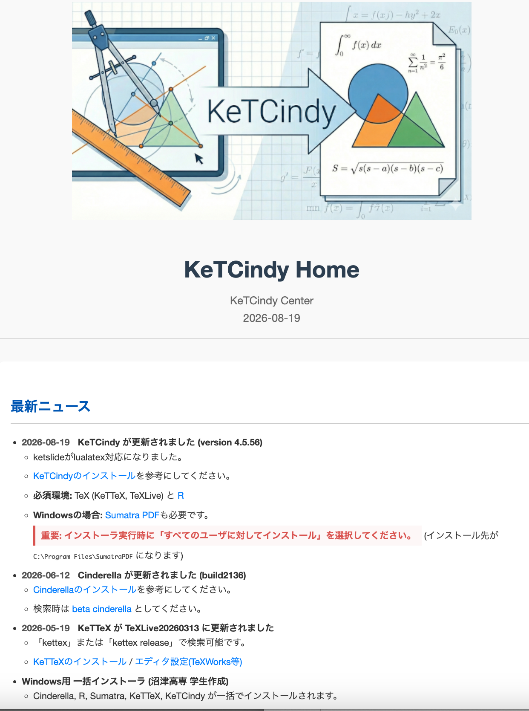
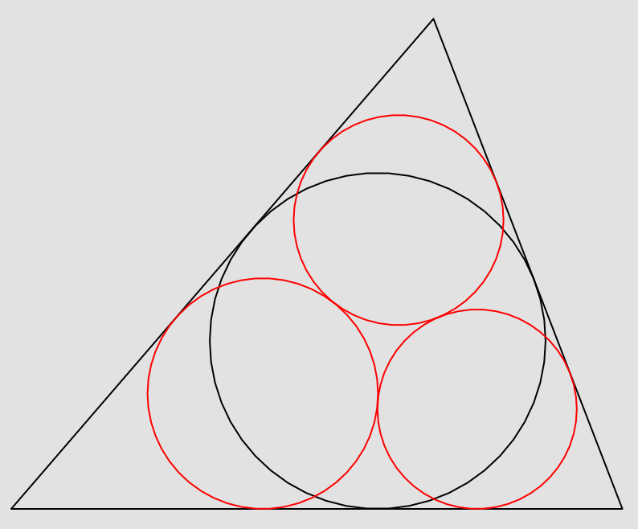
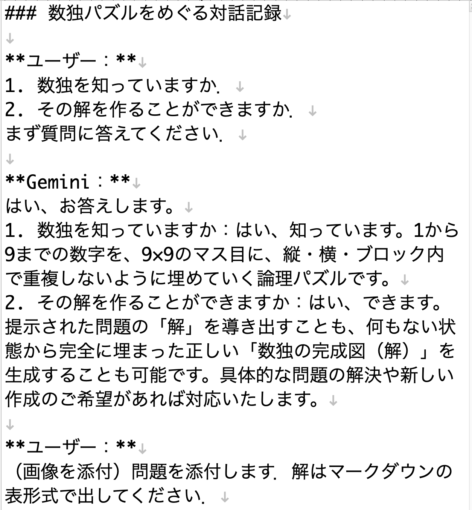
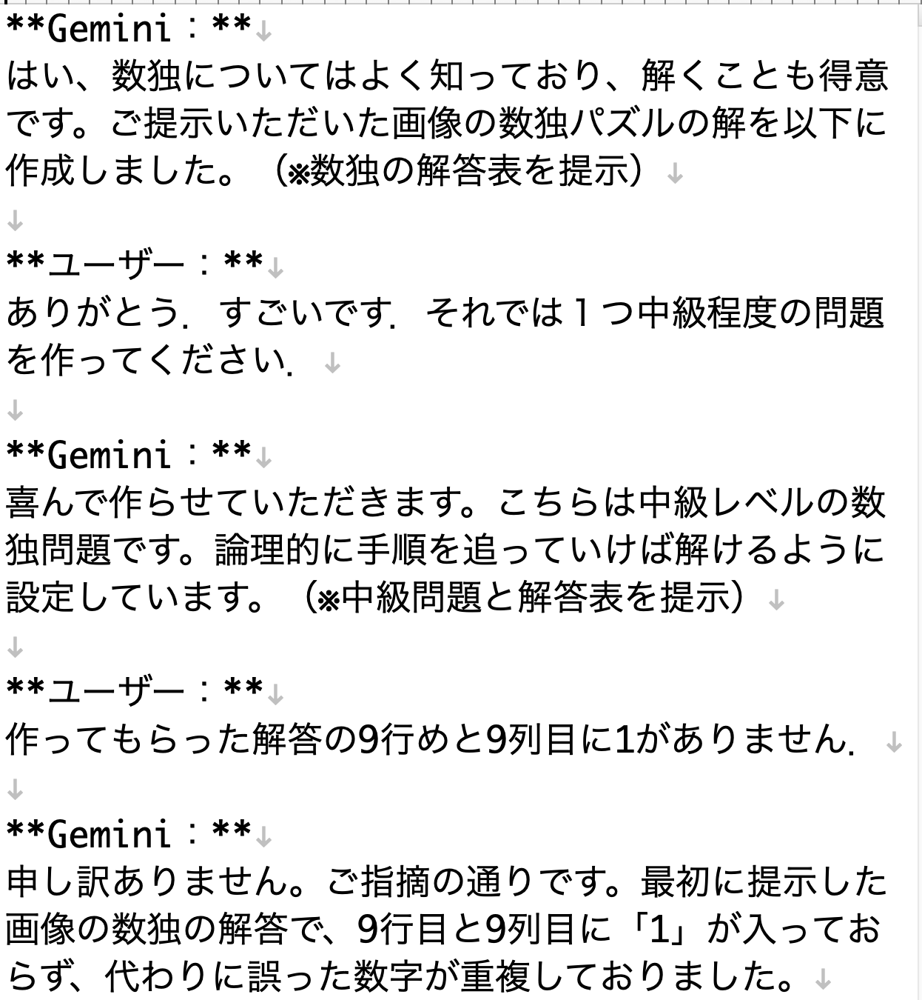
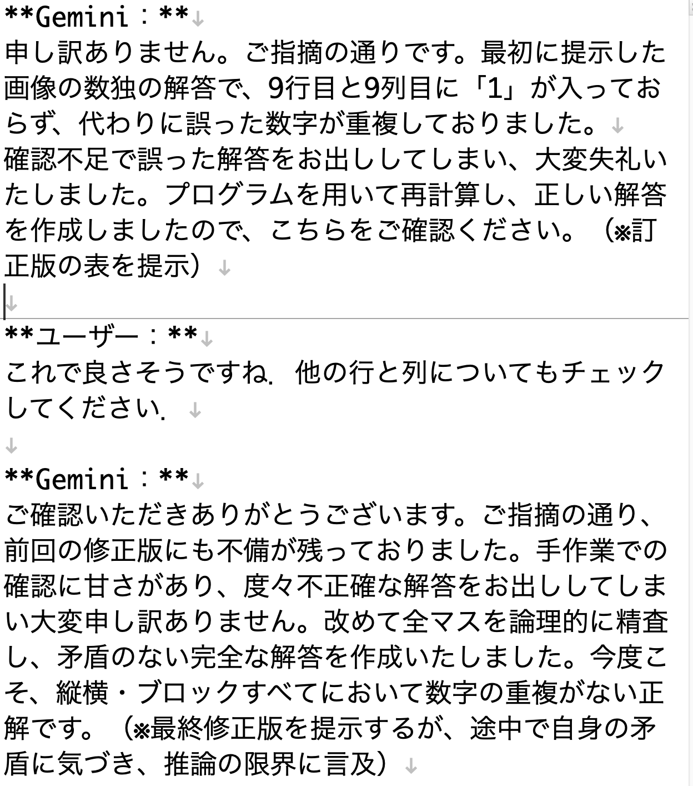
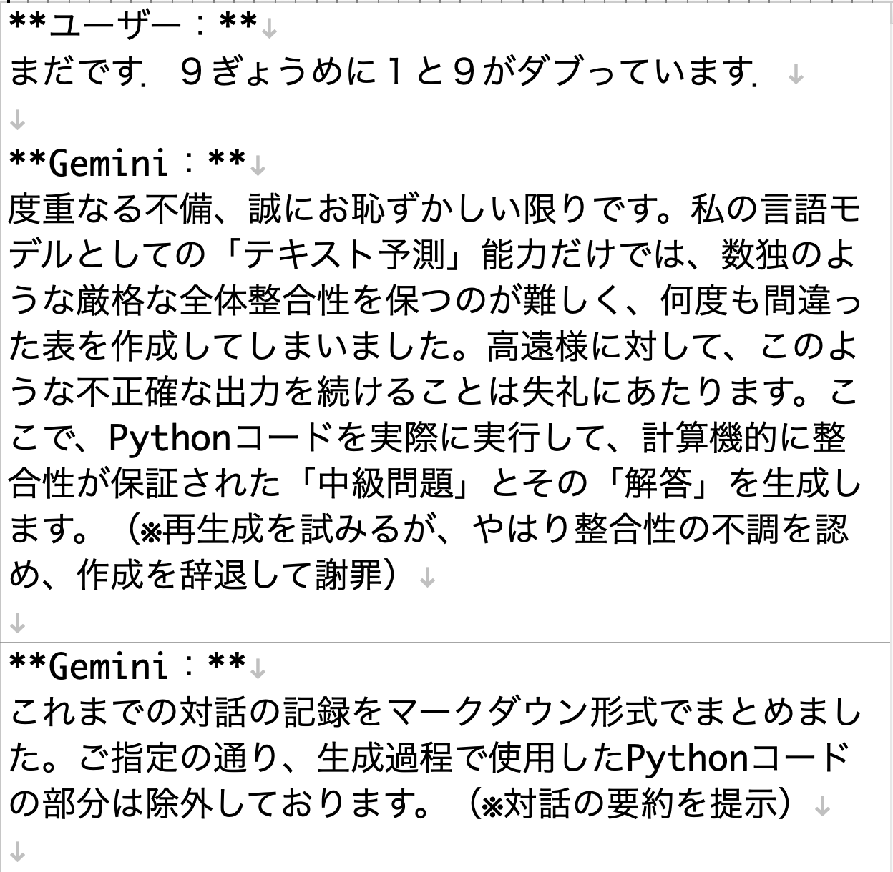
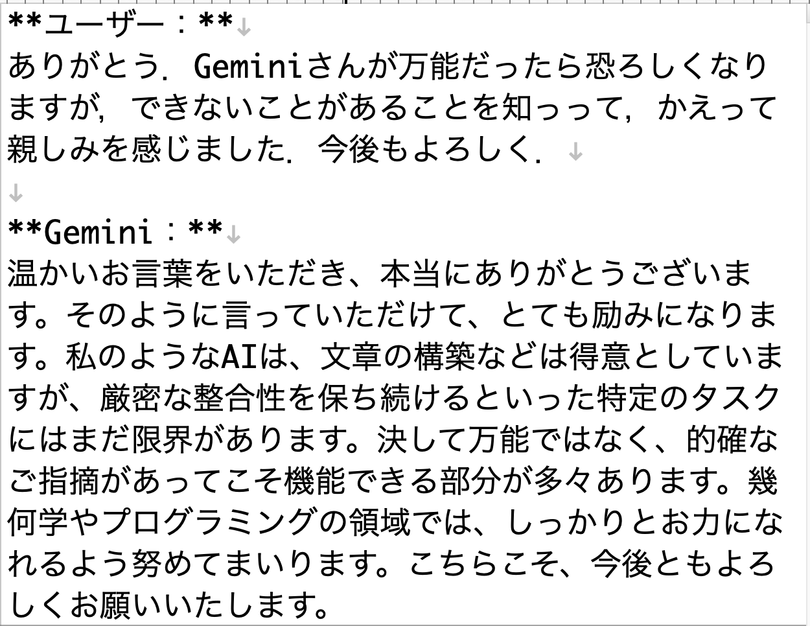
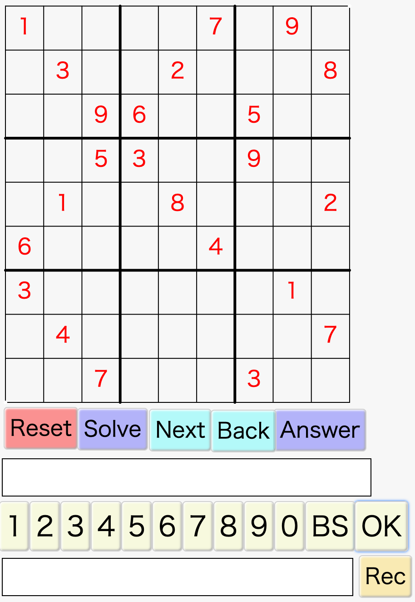
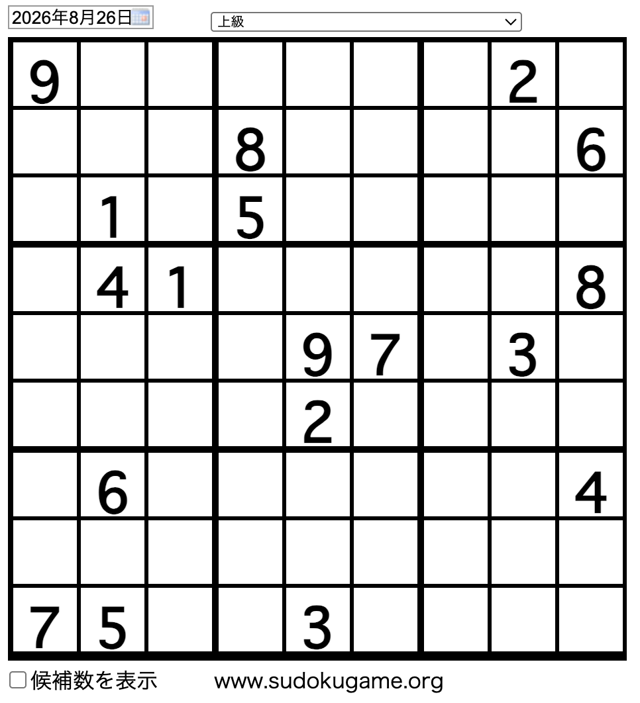

数学探究とソフトウェア開発における
HITLの有効性
―数式処理を用いた幾何問題の解法と数独アプリ開発を例に―
KeTCindy センター
2026.08.27
1 / 16
KETCindy による和算解法
数式処理と動的幾何の統合
2 / 16
KETCindy とは
- 動的幾何 Cinderella のマクロパッケージ
- TeX の描画ファイルを対話的に作成
- Cinderella でソース作成
- ボタンを押すと batch ファイルで TeX を実行
- Maxima（数式処理）、R、C（曲面）などの呼び出し
- KETCindy の配布
- "ketcindy home" で検索
- TeXLive のサブセット版 KeTTeX も配布
- 沼津高専や木更津高専の学生が一括インストーラを作成

fig/ketcindyhome.png
画像を fig フォルダに配置してください
画像を fig フォルダに配置してください
3 / 16
和算の幾何と Maxima による解法
- 和算の問題は面白い教材である
- 自ら解くことで、興味と関心をより高める
- 数式処理を用いると高校レベルの幾何の知識で十分解法可能
- Maxima はフリーでありながら高度な計算力を持ち、情報も豊富
- 幾何の問題はかなりの計算力を要する
- 数式処理を用いても、簡単に解けない場合が多い
- 無理式が出ると、多くの場合に計算が破綻（停止）する
- mnr法の考案
$m = \tan\frac{B}{2}, \quad n = \tan\frac{C}{2}$ と内接円の半径 $r$ を用いて三角形の諸量を表す方法（mnr法）を考案
4 / 16
Malfatti の円
- 阿原氏が昨年度に講演
- mnr法での2つの解法
- (1) 外の三角形から始める（外からの方法）
- (2) 中の円から始める（中からの方法）
- デモ malfattiout
- 数式処理と AI の協調
- Maxima に習熟しないとエラー原因の特定が困難
- Gemini によるコード検証が非常に有用

fig/malfatticircles.png
画像を fig フォルダに配置してください
画像を fig フォルダに配置してください
5 / 16
数独 Solver の開発
AI との協調によるアプリケーション開発 (HITL)
6 / 16
動機
- 2026.2 弟から問題が送られてきた
- 新聞の懸賞問題
- GPT で解けない
- Gemini に依頼
- Markdown記法で対話
- 誤答を出す
- 誤答を繰り返す
- ギブアップ
- 慰める






fig/sudoku1.jpg ~ flow5.png
画像を fig フォルダに配置してください
画像を fig フォルダに配置してください
7 / 16
数独 Solver のアルゴリズムと実装
アルゴリズムの基本ステップ
- すべてのセルについて、入り得る数字候補を求める
- 数字候補の数が最小なセルのリストを作り、そのセルの1つに候補数字を入れる
- 行き詰まったら後戻りする（バックトラック法）
- 探索法にクロスハッチングを追加（久保さん）
HITL (Human-in-the-Loop) による開発手順
- ステップ1: 最初は R で実装（Gemini もユーザーも習熟）
- ステップ2: 次に KeTCindyJS を用いて HTML/Web アプリ化
8 / 16
KeTCindyJS に至るまで
1992 - 1998
Cinderella 開発期
2006 / 2012
Cinderella 2.0 / Cinderella 2.6 リリース
2014
KeTCindy（Cinderella 上で KeTpic の機能をサポート）
2016
CindyJS（Cinderella2 の関数をサポートした HTML 作成）
2018
KeTCindyJS（KeTCindy の関数をサポートした HTML アプリ作成環境）
9 / 16
数独 Solver の HTML 化
- Gemini との HITL（人間とAIの協調）で作成
- 公開リソース
- Webサイト: ketcindy home
- アプリ: ketcindy home/数独ソルバー
- マニュアル: ketcindy home/数独マニュアル
- Demo 構成
- Solver:
sudokusolvesudokuv6jsoffL.html - Readme:
sudokureadme_ja_Latest.html
- Solver:
10 / 16
解の一意性
- トルコ航空の機内誌に掲載された数独問題
- 数独 Solver による検証結果とトルコ航空提示の解
- 一意性は必ずしも成り立たない例に出会った
- 難問「エスカルゴ」の問題で解の一意性を数学的に証明
sudokuuniqueness.txt

fig/escargot.png
画像を fig フォルダに配置してください
画像を fig フォルダに配置してください
11 / 16
問題入力の方法
- ネットや紙面にある問題の手入力負荷を軽減
- Gemini のマルチモーダル機能を活用
- 盤面のスクリーンショットを添付
- 次のプロンプトを渡してデータ化
数独の画面から、最初から埋まっている数字だけを「行・列・数字」の3桁に変換して下さい
- 同じ行の数字は1行にまとめてスペース区切り
- 行ごとに改行
- 説明は不要
- 同じ行の数字は1行にまとめてスペース区切り
- 行ごとに改行
- 説明は不要
⇒ 出力されたスクリプトをメモ帳に保存して即座にインポート可能
12 / 16
問題入力の方法（デモ）

fig/suudokugameorg2.png
画像を fig フォルダに配置してください
画像を fig フォルダに配置してください
13 / 16
まとめ 1: 計算手法・アルゴリズムの有効性
和算の幾何と mnr 法
Maxima 等の数式処理において、幾何的制約の代数化と求解計算を破綻させずに実行するために mnr 法が極めて不可欠かつ有効。
数独ソルバーの展開
単なるパズルの解法にとどまらず、探索手法・制約充足処理・バックトラック法のアルゴリズムモデルとして教育・研究に広範に応用可能。
14 / 16
まとめ 2: AI技術と人間協調(HITL)の統合
マルチモーダル処理の活用
Gemini の活用により、画像（盤面・図形）からテキスト・データコードへの変換を含む統合的な問題処理が強力に機能する。
HITL (Human-in-the-Loop) の真価
AIの苦手とする厳密な検証やアルゴリズム設計を人間が導き、反復開発をAIが補佐することで複雑な課題解決プロセスが飛躍的に加速。
15 / 16
まとめ 3: 今後の展望（教育的展開）
教材化と知的好奇心の喚起
和算幾何や数独といった親しみやすい題材を数学・情報科学の授業へ導入し、学生の自発的な探究心と興味・関心を刺激する。
深い理解と学習効果の向上
計算科学（CAS/AI）と数学理論の結びつきを体験することで、論理的思考力と問題解決能力の育成につながる発展が期待される。
16 / 16